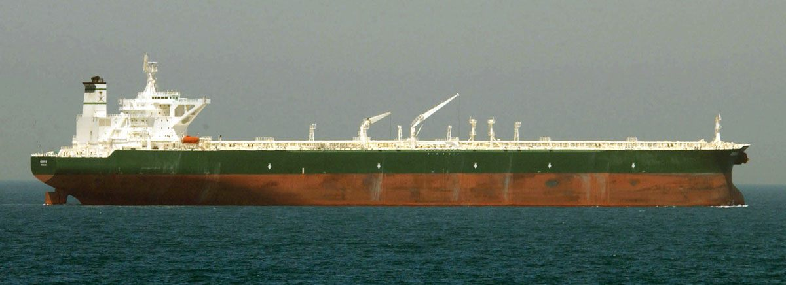

美, 美·이란 종전 합의 문안 공개…"60일만 호르무즈 통행료 면제", 서명 임박

조선일보·연합보·자유시보는 미국이 이란과의 종전 합의 초안 내용을 공개했다고 전했다. 핵심은 무력 충돌을 멈추고 호르무즈 해협의 통항을 정상화하는 데 있으며, 이란이 60일 동안 호르무즈 통행료를 면제한다는 조항이 포함됐다.
광고 문의 · 300×250합의의 골격
공개된 문안에 따르면 양측은 적대행위 중단과 단계적 신뢰 구축에 합의했다. 이란은 일정 기간 호르무즈 통행료를 면제하고, 미국은 그에 상응하는 조치를 약속한 것으로 전해졌다. 트럼프 대통령은 이를 '핵을 막는 합의'라고 표현하며, 이란이 약속을 지키지 않으면 다시 타격하겠다고 경고했다.
이란 측에서는 합의가 발효되려면 이스라엘군이 레바논에서 철수해야 한다는 조건을 제시한 것으로 전해졌다. 합의의 이행이 역내 다른 분쟁의 해소와 맞물려 있음을 보여 준다.
서명 시점과 변수
트럼프 대통령은 양국이 곧 종전 합의에 서명할 것이며, 시점은 18일이나 19일이 될 수 있다고 밝혔다. 이란은 양국 정상이 직접 서명하는 방안을 검토하는 것으로 전해졌다. 다만 일부 이란 매체는 외부 보도로 알려진 문안이 부정확하다고 주장해, 최종본 확정까지 진통이 이어질 수 있음을 시사했다.
3000억 달러 규모로 거론되는 이란 재건기금을 둘러싼 논란도 여전하다. 일각에서는 트럼프 대통령이 자금 지원을 핵 양보와 맞바꿨다는 비판을 제기한다. 자금의 출처와 분담, 집행 방식이 향후 쟁점이 될 전망이다.
유가·물류에 미치는 영향
종전 기대가 커지면서 국제 유가는 안정세를 보였다. 다만 해상 운송 추적 업체들은 합의가 임박했음에도 호르무즈를 지나는 유조선 통항이 여전히 한산하다고 전했다. 보험·금융 제재 해제와 안전 조치가 마무리되기 전까지는 물량이 본격적으로 풀리기 어렵다는 관측이다.
유가·물류의 안정은 수입 의존도가 높은 한국과 재한 화인 가계에 직접적인 호재다. 운송비와 식자재 가격 압력이 누그러지고 환율이 안정되면 생활 물가 부담이 가벼워진다.
제3의 시각
華橋時報는 이 국면을 세 관점으로 본다. 외교의 관점에서는 106일 충돌을 매듭짓는 합의의 의미, 에너지의 관점에서는 호르무즈 정상화가 세계 경제에 주는 안도, 그리고 신뢰의 관점에서는 서명과 이행 사이에 남은 불확실성이다. 우리는 어느 기대에도 쏠리지 않고 사실을 나란히 두어 독자가 스스로 판단하도록 돕는다.
· 조선일보
· 聯合報
· 自由時報